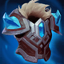

核心裝備
 熾灼之冠
熾灼之冠生命與物防兼具，衝入人群後可穩定灼燒。
 荊棘之甲
荊棘之甲拉姆斯核心反普攻裝，搭配嘲諷強迫敵人攻擊。
 寒冰霸拳
寒冰霸拳7.2b 提高生命且降價，技能後普攻可產生範圍緩速。
 黎明法衣
黎明法衣硬控後觸發額外傷害與揭露，強化團隊跟傷。
 雅瑪蘭守護像
雅瑪蘭守護像後期雙抗疊高後，長時間正面承傷更穩。
Rammus · 100% 承傷／高速嘲諷反普攻型坦克
先用一技找角度，不要直線撞在第一個前排上。進場後三技優先嘲諷攻速射手或需要普攻輸出的核心，二技在吃集火前開；敵方法傷多時不要因為角色是拉姆斯就照樣堆滿物防。
本站評級理由：拉姆斯遇到多物理普攻陣容時仍是 ARAM 最有針對性的前排之一：一技高速開戰、三技嘲諷配反甲能讓射手自己掉血，大絕又能跟進長距離衝撞。7.1d 已把承傷修正回 100%，所以不能再把他當成有額外減傷的無腦坦。
7.1d 明確適用 ARAM／AAA ARAM／Spellbook ARAM：拉姆斯承傷 95%→100%。7.1b 二技額外護甲係數 55/60/65/70%→45/50/55/60%，因此目前標準 ARAM 沒有額外承傷優勢。
生命與物防兼具，衝入人群後可穩定灼燒。
拉姆斯核心反普攻裝，搭配嘲諷強迫敵人攻擊。
7.2b 提高生命且降價，技能後普攻可產生範圍緩速。
硬控後觸發額外傷害與揭露，強化團隊跟傷。
後期雙抗疊高後，長時間正面承傷更穩。

對普攻物理核心最大化反制。

三級鞋提供更高物防與物理護盾。

一技擊飛或三技嘲諷後建立減速區，提升團隊追擊。

高頻硬控提供護盾，補回 100% 承傷後的進場容錯。

降低第一輪集火爆發。

單線兵線讓最大生命穩定成長。

使用召喚師技能後加速，幫助一技追上後排。

閃現嘲諷或調整一技撞擊角度。

一技結束後仍能黏住核心，持續維持嘲諷威脅。
1 技 > 3 技 > 2 技
依 7.2b 主流方向主 1、次 3，提高開戰頻率與嘲諷時間；二技雖是坦度核心，但 7.1b 已下修護甲係數。大絕能點就點。
先在視野外或後方啟動一技，利用速度繞前排撞脆皮。嘲諷後立刻開二技，讓普攻核心在反甲與二技反傷下吃虧。
熾灼＋反甲＋寒冰霸拳後是強勢期。對方有兩個以上普攻核心就主動開；如果主要傷害是法術，改成保排嘲諷刺客，不必硬衝。
100% 承傷代表你會比舊版更快掉血。進場必須看隊友位置，大絕可接一技跨越前排，也能在敵人追我方後排時反開。

冬之降臨替換黎明法衣，進一步降低攻速。
 蘭頓之兆
蘭頓之兆替換黎明法衣或雙抗裝，專門壓低暴擊。
 自然之力
自然之力替換反甲之外的一件物防裝，補魔抗與追擊移速。
看遊戲卡片下方分類 → 點相同分類 → 看左側 S+／S／A。
撞擊、嘲諷與大絕都能限制敵人，控制增幅觸發率很高。
反位移、坦度與貼身控制完全符合拉姆斯的進場工作。
生命、雙防與體型能放大反甲與二技能期間的承傷價值。
硬控、韌性與近身反擊效果都很適合嘲諷後站樁承傷。
一技能核心就是高速滾球，額外跑速能直接提高開戰角度。
嘲諷與滾球冷卻越短，就越容易打出第二次限制。
v80.14.0 ARAM A 第五批：拉姆斯套用 7.1d 最新標準 ARAM 100% 承傷，並同步 7.1b 二技護甲係數削弱；核心更新為 7.2b 熾灼／反甲／寒冰霸拳。
ARAM 使用獨立於召喚峽谷的資料集；本站會把官方模式平衡、單線 5v5 特性與出裝／符文適配分開判斷，而不是直接複製峽谷配置。